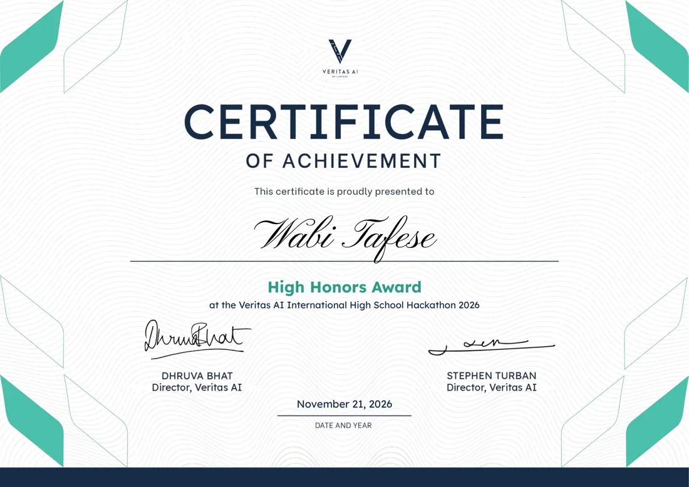

I design, build and evaluate AI and security systems, and I report what they get wrong as carefully as what they get right. Grade 11, Addis Ababa, Ethiopia.
High Honors Award, Veritas AI International High School Hackathon, for MedTranslate Guard
Building SecForge-QNX for the QNX Global Hackathon
I am a Grade 11 student in Addis Ababa and a self-taught software engineer. I build systems end to end: architecture, code, evaluation and deployment. My work sits where AI, security and education meet, and it is aimed at problems close to home, such as exam preparation for Ethiopian students and the safety of medicine instructions translated into Amharic and Afaan Oromo.
What I work on
AI tutoring and educational technology
Software supply-chain and systems security
Numerical methods and scientific computing
Language technology for Amharic and Afaan Oromo
How I work
I evaluate my own work in the open and publish its limits next to its results
I label every project by what exists today
I bring in teammates when a project needs skills I do not have
Selected work
Ordered by the strength of the evidence behind each project. Every status label describes what exists today. Everything I ship, live or in beta, is also listed on Launchpad.
Active development
2025 to present
Isarion
An AI study platform for Ethiopian secondary-school students, starting with the national Matric curriculum and planned to extend to the IB. It explains concepts back to the learner through an AI tutor, turns photos and PDFs of study material into flashcards with OCR, and schedules review with spaced repetition based on each student’s mastery.
It is in closed beta on iOS and Android with more than 60 testers. The backend went down twice during the beta; making it reliable under real use is the current engineering priority.
My role
Founder. I designed the system architecture and built it.
Built with
React Native, FastAPI, LLM APIs, OCR
Status
Closed beta. No public release, revenue or partnerships.
Can simple, explainable checks warn a reader before they rely on a dangerous machine translation of a medicine instruction? We translated English instructions into Amharic and Afaan Oromo with Meta’s NLLB-200 distilled 600M model, translated them back to English, and passed each result through a three-layer gate: target-language rules, back-translation checks, and a check of units, conditions and key terms. Every warning comes with a reason a person can read.
How a translation is screened. In Round 2, layer 3 carried most of the Amharic recall and layer 2 most of the Afaan Oromo recall. Together the layers catch more than any single layer does.
Round 2, held out, 100 sentences per language, thresholds locked before scoring
Amharic
Afaan Oromo
Dangerous translations caught
25 of 31 (80.6%)
25 of 27 (92.6%)
Sentences flagged
55%
62%
This is a screening prototype, not a clinically validated system, and it does not replace pharmacists or professional translators. The evaluation set is small. The gate flags too many sentences for real use. Its advantage over a chrF-only baseline is not statistically distinguishable from zero. Back-translation by the same model can preserve translation errors. The repository reports all of this.

High Honors Award, Veritas AI International High School Hackathon 2026, among more than 1,000 projects from over 75 countries. It came with a $1,250 scholarship toward a Veritas AI program. Certificate (PDF)
My role
System architect and developer: the translation pipeline, the three-layer gate, the evaluation and the locked thresholds.
Team of three
Two teammates rated Amharic translations and produced the Amharic reference translations. One also worked on a learned classifier that did not reach a usable result within the 48-hour window.
A host-side tool that minimizes the security policy of a QNX 8.0 image using delta debugging, then checks that a required workload still runs while an unauthorized process is blocked. The aim is a policy that grants only what the workload needs, with a test that shows it.
Working and verified
QNX 8.0 open-mode and secure-mode images build and boot in QEMU on Windows
A generated policy was retrieved and compiled without errors
Enforcement observed: an operation allowed in the open image is denied in the secure image
Which integration method conserves energy best when simulating the solar system for a century from real initial conditions? We compared Euler, Velocity Verlet, fixed-step RK4 and adaptive RK45 in an interactive three-dimensional simulator. The paper has seven student authors.
Relative energy error after 100 simulated years, 1.83-day step
Euler
Verlet
RK4
RK45
1.8×10⁻¹
3.5×10⁻⁷
1.7×10⁻⁵
6.8×10⁻¹²
My role
I led the seven-student team.
Reproducible
The paper is CC BY 4.0. Code, tests and data are open source, and the simulator runs in the browser.
A GitHub App that scans pull requests for software supply-chain risk: npm and PyPI packages that do not exist, hardcoded secrets and unsafe dynamic execution. Results appear as a GitHub Check, and repository source is not stored. The source includes a versioned policy engine, scoped suppressions, and SARIF and CycloneDX export. Issue-comment commands and team or enterprise features are not built.
A Flask application for English, Amharic and Afaan Oromo with sign-in, local keyword matching and language identification, and 178 knowledge entries on farming, health and education. A service worker caches the interface and knowledge base for offline use. Speech recognition and wider African-language NLP are research goals; they are not implemented in this repository.
What I owned, what teammates owned, and what that produced.
48-hour hackathon
MedTranslate Guard, three people
I owned the architecture and the code. The system could only be judged by people who read Amharic, so two teammates rated translations blind and wrote reference translations, work the evaluation depended on. We kept the ratings of two independent Amharic raters and used the more cautious one, then reported how much the raters disagreed.
2026
Solar-system paper, seven students
I led a team of seven students from first comparison to a published, citable paper with open code, tests and a live demo that others can rerun.
2025/26
Kind Koala Ethiopia, IT team
Member of the club’s IT team, recognized for managing digital tools and building forms and systems for its initiatives.
A security auditor built for my INSA Cyber Talent application. It looks for passwords kept in files named in Amharic, checks for risky open network ports, scores overall system health, and suggests fixes. The web page is a simulation of the logic and cannot touch a real system; a separate Python auditor performs the actual system checks.
An OSINT investigation of abusive online infrastructure that I reported to hosting providers for takedown, followed by a separate authorized red-team exercise in the same training program.
Exploring next
Active development
Early work
Cyber incident registry (working name)
A planned open database of cyber incidents and data breaches, gathered from public sources with every record linking back to its original source, and with AI-assisted labeling. The first collectors, for CISA’s Known Exploited Vulnerabilities catalog and SEC 8-K filings, are built. The full application is not.
Concept
Not built
ClearRx
An idea, not an app: nothing has been implemented. The proposal is to help a patient or caregiver turn a hard-to-read prescription into clear instructions with pictograms, using only details a pharmacist has verified.
The design rule comes first. ClearRx must never guess an uncertain medicine name, dose or frequency. When something cannot be read with certainty, it stops and asks for pharmacist verification.
Record
Awards, recognition and coursework, each with the document where one exists.
High Honors Award, Veritas AI International High School Hackathon, with a $1,250 program scholarship
National semifinalist, INSA Cyber Talent Challenge, Development and Emerging Technologies
Academic Silver Medal
Certificates
I have completed courses 1 to 3 of the eight-course Google Cybersecurity Certificate. I have applied for financial aid for course 4. The professional certificate itself is not yet complete.
Credential
Issuer
Date
Evidence
Connect and Protect: Networks and Network Security (Google Cybersecurity, course 3)
Google, Coursera
Completed
Not yet on this site
Play It Safe: Manage Security Risks (Google Cybersecurity, course 2)